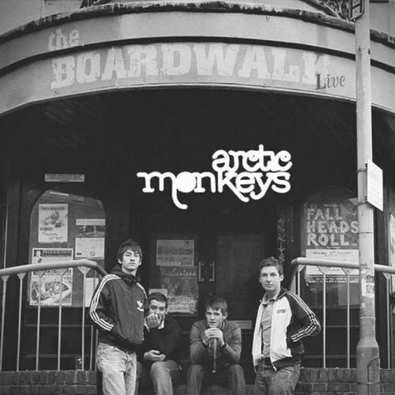
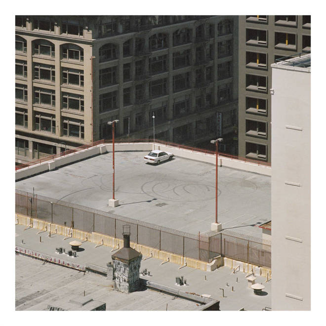

ABOUT
Arctic Monkeys are an English rock band formed in Sheffield in 2002. The group consists of Alex Turner (lead vocals, guitar, keyboards), Jamie Cook (guitar, keyboards), Nick O'Malley (bass guitar, backing vocals), and Matt Helders (drums, backing vocals). Former band member Andy Nicholson (bass guitar, backing vocals) left the band in 2006 and was replaced by Nick O'Malley.
BEGINNINGS
The band started back in 2002, as an instrumental only group. Alex and Matt, who were close friends
and neighbours at the time, teamed up with their pal Andy to form the group. After the addition of
Jamie, the Arctic Monkeys played their first official gig in 2003 and soon began recording demo tracks
the first of which would be called 'Beneath the Boardwalk'
Now
After taking a during Covid, the band recently came out with their new album 'The Car' this October. Currently, they are touring across 12 countries and have 67 upcoming concerts.
